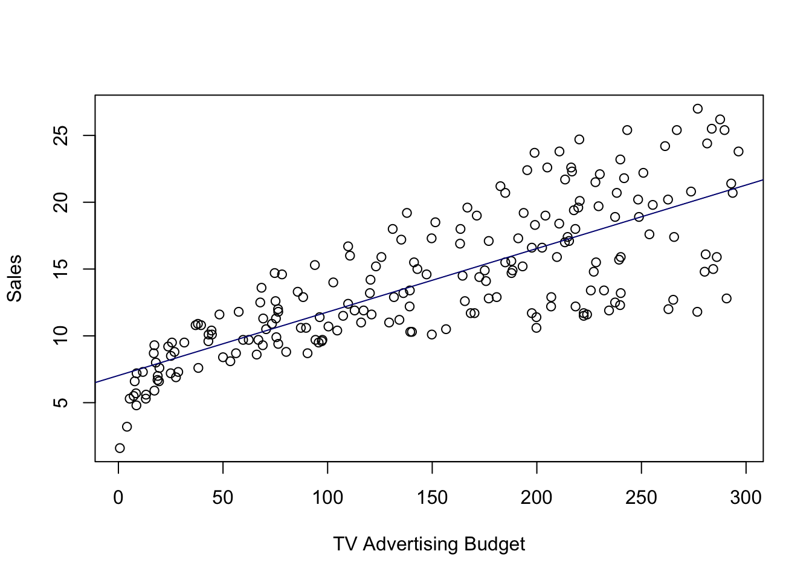
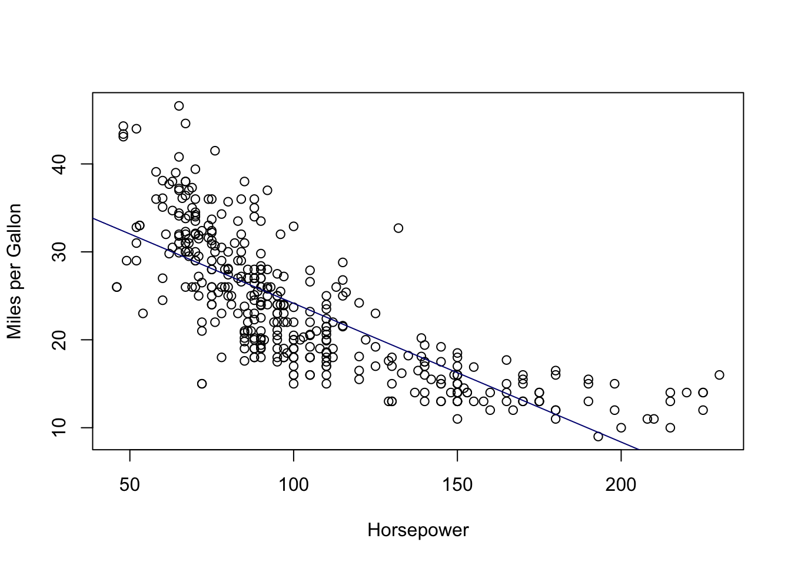
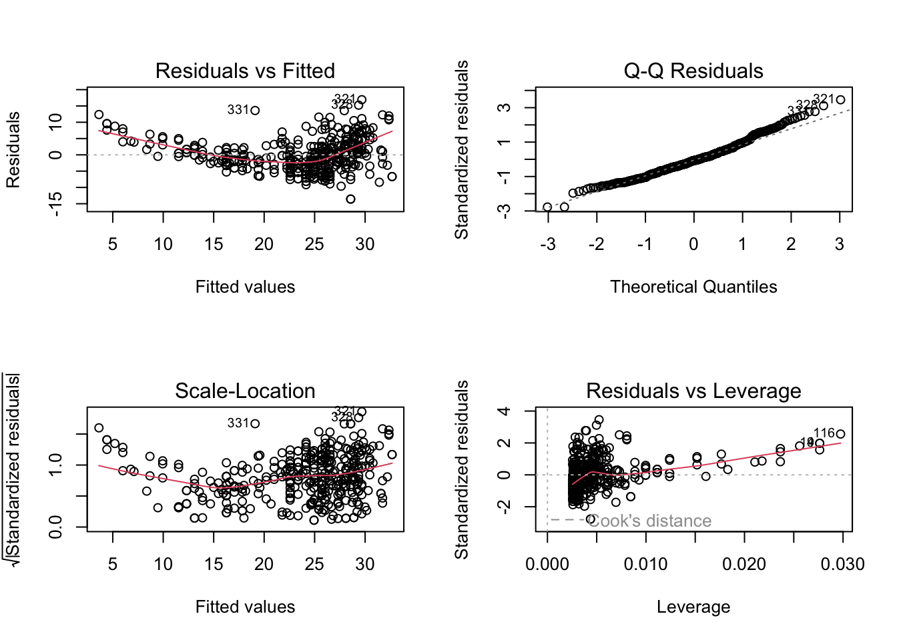
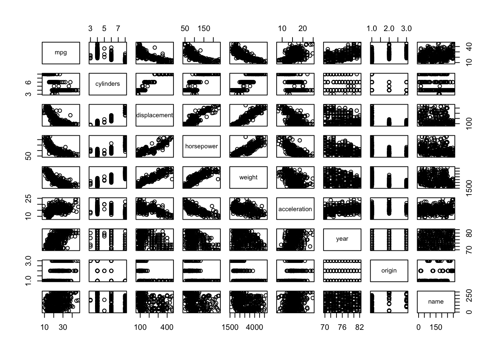
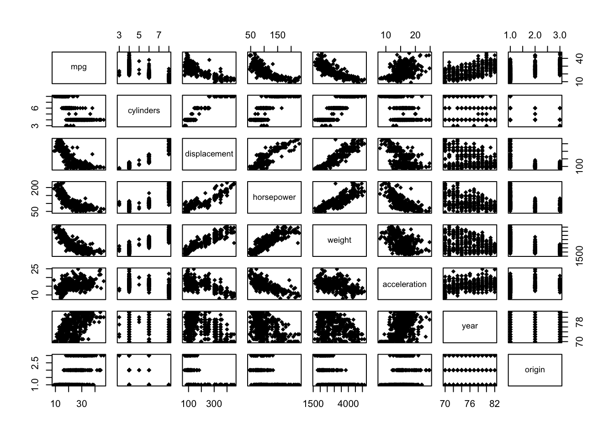
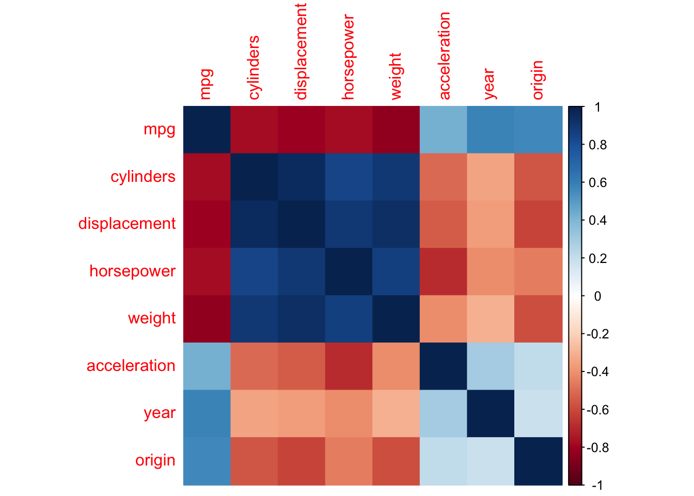
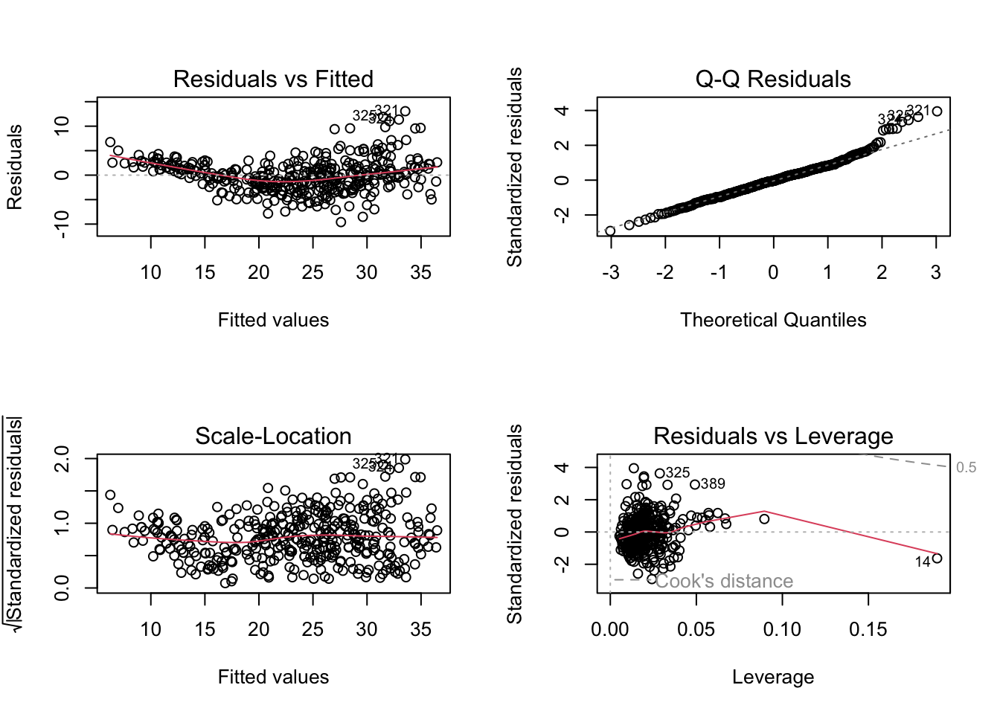

3 Statistics and Regression with R
Before we start doing any analysis, let’s setup our working directory. Moreover, because the data sets we’ll be working with are relatively small, we can just load both files and assign them to two unique variables.
# Here we setup our working directory, i.e. the location of the folder we are using
setwd("/Users/theoobadiahteguh/R_Programming/ECON3284/ProblemSet1")
# Now we combine the directory path and the file name to obtain the full path
advertising <- read.csv(file.path(getwd(), "Advertising.csv"))
auto <- read.csv(file.path(getwd(), "Auto.csv"))Now that we have loaded the data, we can begin our analysis and answer the questions in the second section.
3.1 Linear Regression
For questions 1 to 3 we will use the “Advertising” data set. Let’s first see the structure of the data:
## 'data.frame': 392 obs. of 9 variables:
## $ mpg : num 18 15 18 16 17 15 14 14 14 15 ...
## $ cylinders : int 8 8 8 8 8 8 8 8 8 8 ...
## $ displacement: num 307 350 318 304 302 429 454 440 455 390 ...
## $ horsepower : int 130 165 150 150 140 198 220 215 225 190 ...
## $ weight : int 3504 3693 3436 3433 3449 4341 4354 4312 4425 3850 ...
## $ acceleration: num 12 11.5 11 12 10.5 10 9 8.5 10 8.5 ...
## $ year : int 70 70 70 70 70 70 70 70 70 70 ...
## $ origin : int 1 1 1 1 1 1 1 1 1 1 ...
## $ name : chr "chevrolet chevelle malibu" "buick skylark 320" "plymouth satellite" "amc rebel sst" ...Let us now create the model in our R environment and create a plot to visualize the data with the model:
model_q1 <- lm(sales ~ TV, advertising)
attach(advertising)
plot(TV, sales, xlab = "TV Advertising Budget", ylab = "Sales")
abline(model_q1, col = "navy")
We can also generate a summary of the model:
##
## Call:
## lm(formula = sales ~ TV, data = advertising)
##
## Residuals:
## Min 1Q Median 3Q Max
## -8.3860 -1.9545 -0.1913 2.0671 7.2124
##
## Coefficients:
## Estimate Std. Error t value Pr(>|t|)
## (Intercept) 7.032594 0.457843 15.36 <2e-16 ***
## TV 0.047537 0.002691 17.67 <2e-16 ***
## ---
## Signif. codes: 0 '***' 0.001 '**' 0.01 '*' 0.05 '.' 0.1 ' ' 1
##
## Residual standard error: 3.259 on 198 degrees of freedom
## Multiple R-squared: 0.6119, Adjusted R-squared: 0.6099
## F-statistic: 312.1 on 1 and 198 DF, p-value: < 2.2e-16From this summary we can answer parts (a) to (c):
a.) Beta(1) = 0.047537
b.) Standard Error of Beta(1) = 0.002691
c.) The t-statistic of Beta(1) = 17.67 and it is statistically significant as it has a p-value smaller than 0.001, and thus we reject the null hypothesis.
d.) If there is zero budget for TV Advertising, then the sales will simply be the
y-intercept of the model, that is equal to 7.032594.
e.) Finally the R-Squared is 0.6119 and we can interpret it as “61.19% of the
change in sales can be explained by the variability of TV Advertising.”
3.2 Multiple Linear Regression
Let us now create the second model. We will not visualize this model but we can still generate a cohesive summary.
##
## Call:
## lm(formula = sales ~ TV + radio + newspaper, data = advertising)
##
## Residuals:
## Min 1Q Median 3Q Max
## -8.8277 -0.8908 0.2418 1.1893 2.8292
##
## Coefficients:
## Estimate Std. Error t value Pr(>|t|)
## (Intercept) 2.938889 0.311908 9.422 <2e-16 ***
## TV 0.045765 0.001395 32.809 <2e-16 ***
## radio 0.188530 0.008611 21.893 <2e-16 ***
## newspaper -0.001037 0.005871 -0.177 0.86
## ---
## Signif. codes: 0 '***' 0.001 '**' 0.01 '*' 0.05 '.' 0.1 ' ' 1
##
## Residual standard error: 1.686 on 196 degrees of freedom
## Multiple R-squared: 0.8972, Adjusted R-squared: 0.8956
## F-statistic: 570.3 on 3 and 196 DF, p-value: < 2.2e-16Thus, we can answer the questions based on the summary:
a.) Estimated beta(2) = 0.188530
b.) Standard error of beta(3): = 0.005871
c.) The t-statistic of beta(3) = -0.177 and the p-value is much larger than 0.1,
so we fail to reject the null hypothesis and it is not statistically significant.
d.) Adjusted R-Squared = 0.8956 and it can be explained as “the variability of Y that can be explained by the regression model, i.e. the variability of X1, X2, and X3”. In other words, 89.56% of the variability of Sales can be explained by the TV, Radio, and Newspaper variables.
e.) The F-statistic = 570.3 and as the p-value of F-statistic value is nearly 0 which is much smaller than 0.001, we can conclude that at least one of the coefficients is non-zero.
3.3 Adding Interaction Variables
Let us now create the third model. Again, we will not visualize this model but we can still generate a cohesive summary.
##
## Call:
## lm(formula = sales ~ TV + radio + TV:radio, data = advertising)
##
## Residuals:
## Min 1Q Median 3Q Max
## -6.3366 -0.4028 0.1831 0.5948 1.5246
##
## Coefficients:
## Estimate Std. Error t value Pr(>|t|)
## (Intercept) 6.750e+00 2.479e-01 27.233 <2e-16 ***
## TV 1.910e-02 1.504e-03 12.699 <2e-16 ***
## radio 2.886e-02 8.905e-03 3.241 0.0014 **
## TV:radio 1.086e-03 5.242e-05 20.727 <2e-16 ***
## ---
## Signif. codes: 0 '***' 0.001 '**' 0.01 '*' 0.05 '.' 0.1 ' ' 1
##
## Residual standard error: 0.9435 on 196 degrees of freedom
## Multiple R-squared: 0.9678, Adjusted R-squared: 0.9673
## F-statistic: 1963 on 3 and 196 DF, p-value: < 2.2e-16From this summary we can answer part (a), and find the value of beta(3) in the following manner so that it is readable:
## [1] 0.001086495And then, we can calculate part (b) as follows:
## [1] 1.2307963.4 Putting it All Together
Now, for this question we will use the “Auto” data set. Let’s first see the structure of the data:
## 'data.frame': 392 obs. of 9 variables:
## $ mpg : num 18 15 18 16 17 15 14 14 14 15 ...
## $ cylinders : int 8 8 8 8 8 8 8 8 8 8 ...
## $ displacement: num 307 350 318 304 302 429 454 440 455 390 ...
## $ horsepower : int 130 165 150 150 140 198 220 215 225 190 ...
## $ weight : int 3504 3693 3436 3433 3449 4341 4354 4312 4425 3850 ...
## $ acceleration: num 12 11.5 11 12 10.5 10 9 8.5 10 8.5 ...
## $ year : int 70 70 70 70 70 70 70 70 70 70 ...
## $ origin : int 1 1 1 1 1 1 1 1 1 1 ...
## $ name : chr "chevrolet chevelle malibu" "buick skylark 320" "plymouth satellite" "amc rebel sst" ...a.) We will now create a linear model with mpg as the response and horsepower as the predictor, and generate a summary
# Creating the model
model_q4a <- lm(mpg ~ horsepower, auto)
# Generating the summary
summary(model_q4a)##
## Call:
## lm(formula = mpg ~ horsepower, data = auto)
##
## Residuals:
## Min 1Q Median 3Q Max
## -13.5710 -3.2592 -0.3435 2.7630 16.9240
##
## Coefficients:
## Estimate Std. Error t value Pr(>|t|)
## (Intercept) 39.935861 0.717499 55.66 <2e-16 ***
## horsepower -0.157845 0.006446 -24.49 <2e-16 ***
## ---
## Signif. codes: 0 '***' 0.001 '**' 0.01 '*' 0.05 '.' 0.1 ' ' 1
##
## Residual standard error: 4.906 on 390 degrees of freedom
## Multiple R-squared: 0.6059, Adjusted R-squared: 0.6049
## F-statistic: 599.7 on 1 and 390 DF, p-value: < 2.2e-16From the summary, we can clearly see that:
i.) There is a relationship between our predictor and response, and our predictor is statistically significant as the p-value is less than 0.001.
ii.) We see that the value of R-Squared is 0.6059, and the relationship is somewhat at moderate strength.
iii.) The relationship is a negative relationship, as reflected by beta(horsepower) of -0.157845.
iv.) If we have 98 horsepower then we would predict the mpg to be:
## [1] 24.46708Additionally, we can also calculate the 95% confidence intervals:
## 2.5 % 97.5 %
## (Intercept) 38.525212 41.3465103
## horsepower -0.170517 -0.1451725# We can use this for the confidence interval of the prediction if we have 98 horsepower
# We can input the values of one or more predictors in the data frame
predict(model_q4a, data.frame(horsepower = 98), interval = "confidence")## fit lwr upr
## 1 24.46708 23.97308 24.96108b.) We can also plot our model as follows:
attach(auto)
plot(horsepower, mpg, xlab = "Horsepower", ylab = "Miles per Gallon")
abline(model_q4a, col = "navy")
c.) We will now create diagnostic plots. To do this, we use the broom library:

There are a few things that have been highlighted by the diagnostic plots:
1.) The Residuals vs Fitted plot has a slightly curved convex line, suggesting
that the relationship may not be linear.
2.) The Normal Q-Q plot shows that the residual points follow the straight dashed line relatively well, although it is also slightly convex in shape. This suggests that the residuals may not completely follow a normal distribution.
3.) The Scale-Location (or Spread-Location) plot shows a convex or bent v-shaped line with a high concentration of points on the right, suggesting that we may have a heteroscedasticity problem.
4.) The Residuals vs Leverage plot shows that there aren’t any “influential” variables.
d.) We will now create a scatter plot matrix with base R:

Alternatively, a more reasonable and tidier way is to use the function pairs(), and we must exclude the “name” variable as it is qualitative:

e.) We can also create a matrix of correlations and visualize it with the corrplot library:
## mpg cylinders displacement horsepower weight
## mpg 1.0000000 -0.7776175 -0.8051269 -0.7784268 -0.8322442
## cylinders -0.7776175 1.0000000 0.9508233 0.8429834 0.8975273
## displacement -0.8051269 0.9508233 1.0000000 0.8972570 0.9329944
## horsepower -0.7784268 0.8429834 0.8972570 1.0000000 0.8645377
## weight -0.8322442 0.8975273 0.9329944 0.8645377 1.0000000
## acceleration 0.4233285 -0.5046834 -0.5438005 -0.6891955 -0.4168392
## year 0.5805410 -0.3456474 -0.3698552 -0.4163615 -0.3091199
## origin 0.5652088 -0.5689316 -0.6145351 -0.4551715 -0.5850054
## acceleration year origin
## mpg 0.4233285 0.5805410 0.5652088
## cylinders -0.5046834 -0.3456474 -0.5689316
## displacement -0.5438005 -0.3698552 -0.6145351
## horsepower -0.6891955 -0.4163615 -0.4551715
## weight -0.4168392 -0.3091199 -0.5850054
## acceleration 1.0000000 0.2903161 0.2127458
## year 0.2903161 1.0000000 0.1815277
## origin 0.2127458 0.1815277 1.0000000## corrplot 0.92 loaded
f.) Finally we can create a multiple linear regression model from the Auto data set and generate its summary:
# Here we include every variable except for "name"
model_q4f <- lm(mpg ~ .-name, auto)
summary(model_q4f)##
## Call:
## lm(formula = mpg ~ . - name, data = auto)
##
## Residuals:
## Min 1Q Median 3Q Max
## -9.5903 -2.1565 -0.1169 1.8690 13.0604
##
## Coefficients:
## Estimate Std. Error t value Pr(>|t|)
## (Intercept) -17.218435 4.644294 -3.707 0.00024 ***
## cylinders -0.493376 0.323282 -1.526 0.12780
## displacement 0.019896 0.007515 2.647 0.00844 **
## horsepower -0.016951 0.013787 -1.230 0.21963
## weight -0.006474 0.000652 -9.929 < 2e-16 ***
## acceleration 0.080576 0.098845 0.815 0.41548
## year 0.750773 0.050973 14.729 < 2e-16 ***
## origin 1.426141 0.278136 5.127 4.67e-07 ***
## ---
## Signif. codes: 0 '***' 0.001 '**' 0.01 '*' 0.05 '.' 0.1 ' ' 1
##
## Residual standard error: 3.328 on 384 degrees of freedom
## Multiple R-squared: 0.8215, Adjusted R-squared: 0.8182
## F-statistic: 252.4 on 7 and 384 DF, p-value: < 2.2e-16We can now answer the following sections:
i.) There is a relationship between the predictors and the response. The model has an F-statistic of 252.4 with a p-value of less than 0.001 classifying it as statistically significant. Moreover, the relationship of the predictors and the response is quite strong as the adjusted R-Squared value is 0.8182.
ii.) The “displacement” predictor is statistically significant with a p-value less than 0.01. We also have weight, year, and origin with p-values smaller than 0.001.
iii.) The year coefficient suggests that over time, the number of miles per gallon increases. This makes sense because as time passes we expect technological improvement such that engines become more efficient.
g.) We then plot the diagnostic plots as we did in a previous section:

There are a few things that have been highlighted by the diagnostic plots:
1.) The Residuals vs Fitted plot has a slightly curved convex line, suggesting
that the relationship may not be linear.
2.) The Normal Q-Q plot shows that the residual points somewhat follow the straight dashed line, although it deviates upward on the right side of the plot. This suggests that the residuals may not completely follow a normal distribution.
3.) The Scale-Location (or Spread-Location) plot shows a no perfectly straight horizontal line with a high concentration of points on the middle and the right, suggesting that we may have a heteroscedasticity problem.
4.) The Residuals vs Leverage plot shows that there aren’t any “influential” variables, as no observation falls outside the Cook’s distance line.
Thus, we conclude this first problem set.